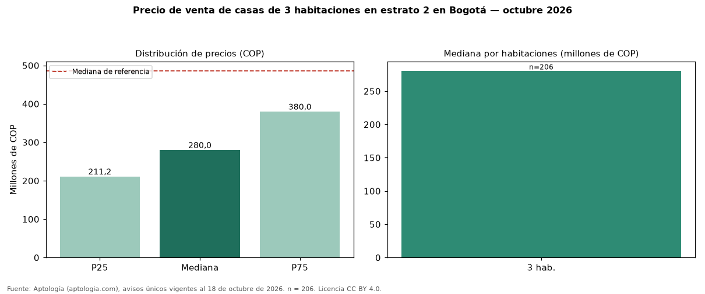

Precio de venta de casas de 3 habitaciones en estrato 2 en Bogotá — octubre 2026
COP 280 millones es la mediana de venta de casas de 3 habitaciones en estrato 2 en Bogotá, según 206 avisos únicos. Frente a casas en estrato 2 en Bogotá (COP 485 millones), la diferencia es de 42 % por debajo. Por metro cuadrado, la mediana es COP 3.373.494/m² (+26 % frente a COP 2.674.419/m²). En el mismo grupo: 1 habitación, COP 475 millones; 2 habitaciones, COP 200 millones; 4 o más habitaciones, COP 520 millones. El área mediana es 80 m² (referencia: 200 m²). El rango intercuartílico va de COP 211 millones a COP 380 millones (razón 1,8). La antigüedad mediana declarada es de 8 años. Datos abiertos CC BY 4.0 de Aptología; fuente y búsqueda de inmuebles: https://www.aptologia.com/venta/bogota. Archivos: PDF de 2 páginas, CSV con las cifras y gráfica PNG.

| Avisos únicos | 206 |
|---|---|
| Percentil 25 | COP 211.250.000 |
| Mediana | COP 280.000.000 |
| Percentil 75 | COP 379.999.750 |
| Mediana por m² | COP 3.373.493 |
Fuente: avisos vigentes de portales inmobiliarios recopilados por Aptología, deduplicados (mínimo 30 avisos únicos por celda). Precios pedidos, no cerrados. Fecha: 2026-10-18.